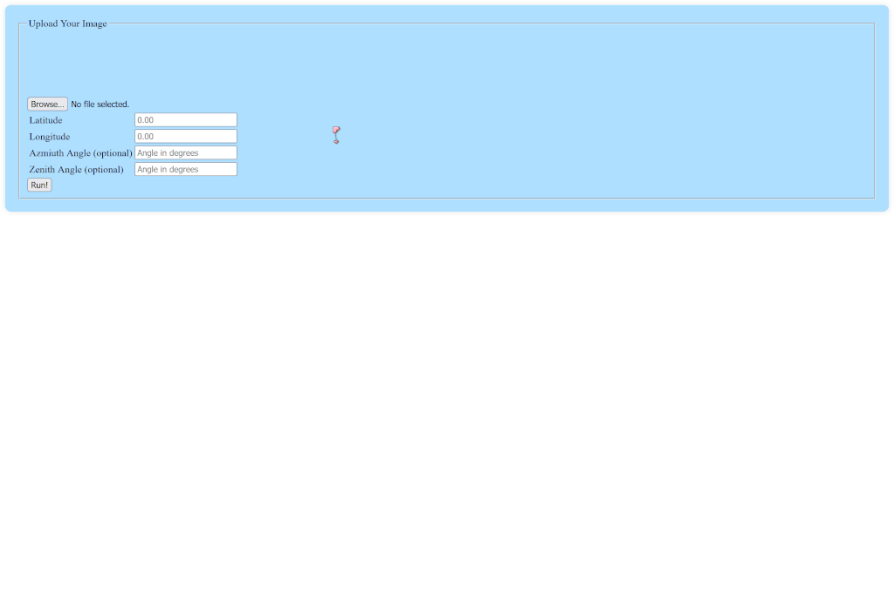

How to Use the Solar Energy Calculator
- Upload a 360° panorama taken from the place where the solar panel will be located. This tool is designed to use Photospheres taken on Google Pixel phones, so if you took your photo with something else it might not be able to process it. 
-
Click on the image to create a bounding box around the sky. It can be rough, but make sure it doesn't contain
any trees or buildings.

- Enter the latitude and longitude where the photo was taken. This is only necessary if the image doesn't already have them in its metadata. Most phones add this data automatically.
- If your panel must be at a specific azimuth or zenith angle, enter those angles. If you leave those boxes empty, the program will calculate the best possible angle for you.
- Click the run button! Your image will be processed and results will be returned to you.
All images uploaded are cached for roughly one hour after they are processed, after which they are deleted from the server.